Вечер 1
Ножи на карте
Вырезать свою долю на шкуре-карте, снарядить «Седьмую долю» и до ночи выйти на белое дно; к концу вечера стол должен уметь читать лист следа сам.
Открыть сценарий →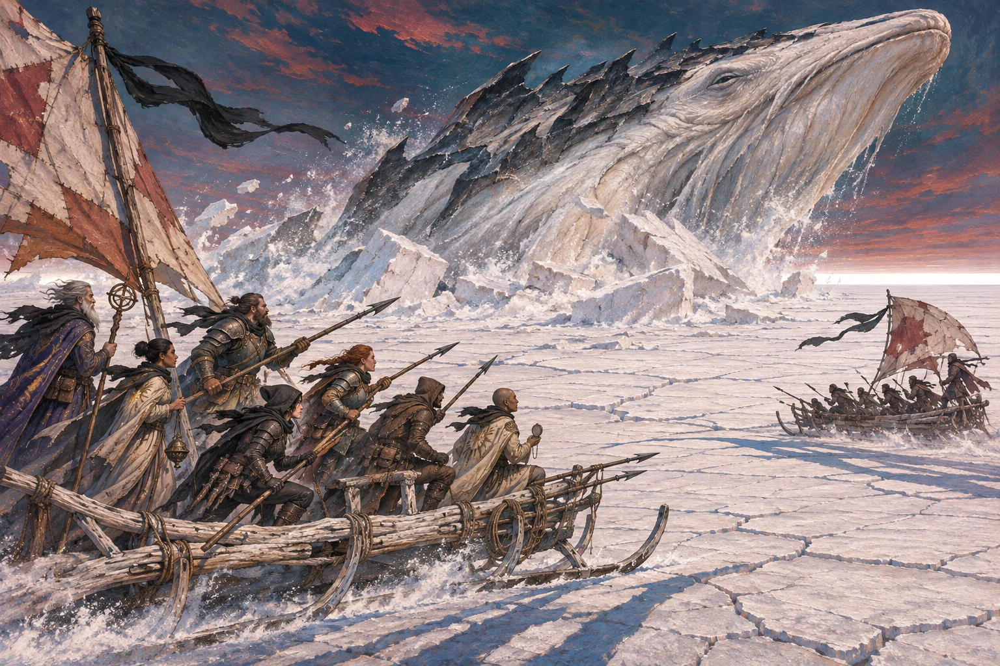
Море ушло сорок лет назад. По его белому дну ходят ладьи на полозьях, а под коркой соли плавает Белорез — левиафан, чей гребень режет соль, как парус. В Пороге Вдов артели делят будущую добычу ножами прямо по карте дна. Вам достаётся седьмая доля: восемь дней похода, бочки воды, две шлюпки и стойка гарпунов. Соперники ближе зверя — пока вы уверены, что охотники здесь вы.
Перед чтением вступления сверьте место героев, присутствующих людей и предметы с итогом прошлого вечера. Если условия встречи отпали, сыграйте последствия там, где находится партия. Событие по расписанию может произойти за кадром. Герои узнают о нём от тех, кто был на месте.
Сверьте число бочек на буксире. Спасать на льду можно только то, что отправили вперёд. Если шлюпка прошла пустой, выбор теперь у каменного острова: ждать подвоз или расходовать запас, который уже здесь.
Спросите, кто видел передачу. Люди Чёрной Сети прибывают к оставленной стоянке и действуют по своим сведениям. Зафиксируйте, нашлась ли у них там лодка и кто сможет предупредить нынешнего хранителя ящика.
Дайте каждой лодке назвать свой берег. Запишите, у кого ящик Ивы и кто видел Белореза последним. Вдовы решают, встретить ли вернувшихся или продолжать поиск своими силами. В перечне итогов сохраните отдельно отказ от охоты и поражение уже начавшейся схватки.
Гарпунов брать не будем. Вывезем людей с разорённых стоянок. Отвозим людей от разорённой стоянки. Ладья прибывает без добычи. Семьи решают, выходить ли за Белорезом в следующий сезон.
Сверим кольцо обратного следа со швом на панцире. Попробуем изменить ход и проверим, повернулся ли гребень следом. Доступные свидетельства — Кольцо обратного следа, Светлый шов на панцире. Зверь обходит охотников к пути отхода. По незажившему шву его можно опознать, не отрезая группе дорогу назад. Метим свободную линию отхода вдали от заднего следа. Знаем, что Белорез может выйти за охотниками. Снимаем приманку и предупреждаем лодки; отстоять своё решение придётся при дележе платы.
Шлюпка и две бочки остаются в рассоле, корка не держит людей. Принимаем людей с твёрдого края, поклажу считаем отдельно. Режем буксир и подбираем людей с твёрдых плит. На черту приходим без этой воды и можем уйти с пустыми руками.
Для игры без подготовки: что говорят люди, места в стороне от главной дороги и прохожие. Пометки о правде слухов — только для ведущего; сказанное за столом становится фактом мира, лишь когда вы его подтвердите.
«Седьмую долю у нас всегда отдают чужим. Своих на неё, говорят, уже не осталось».
Правда. Так и есть: седьмую, восточную долю Оксинья каждый год отдаёт чужим — это видно по старым надрезам на шкуре-карте в первом вечере. Почему именно восточную и что держит эта доля на отходе, слух не говорит и говорить не должен.
«Белорез — это само ушедшее море. Убьёшь его — и вода уже никогда не вернётся к берегу».
Неправда. Суеверие Порога. Белорез — соляной зверь, а не исчезнувшее море; почему море ушло, кампания не разгадывает. Слух хорош в устах старика у лестницы и ничего не меняет в охоте.
«Он приходит на голос. Кто на корке поёт или бранится, того и берёт».
Отчасти правда. Шум и правда тянет зверя ближе, но слышит он дрожь корки — шаг, полоз, удар, звон, — а не голос. Гордея скажет это сама: «Он идёт на дрожь, а не на голос». Слух удобен, чтобы напомнить о цене громкого хода по листу следа.
«Кровь на корке засыпь солью, не то к ночи он придёт понюхать».
Правда. Правда, и это уже есть в правилах похода: несолёная кровь или пластина на борту приближает зверя за ночь, соль снимает это. Погребальная соль Сельмы годится без траты времени.
«Вдовий платок на мачте отводит зверя: под платком лодку он не тронет».
Неправда. Самое утешительное и самое ложное поверье Порога. Платок — память о мёртвых, а не оберег; свежий платок на мачте «Седьмой доли» значит совсем другое. Вреда от слуха нет, но и защиты тоже.
«На Трёх Глотках вода за меру, а не за доблесть. Хоть капитан, хоть подёнщик — мера одна».
Правда. Правда: Нена Соль меняет воду на бочку, работу или пластину и с мерой не спорит (четвёртый вечер). Слух подскажет столу заранее, что за красивые слова воды не дадут.
«Под Клыком Бурь в тот день виноваты были все, а сознаться так никто и не сознался».
Отчасти правда. Каждый там виновен в своём выборе: Гордея не спустила верёвку, Радан потом увёз воду «Чёрной Сети». Но Демид признаёт, что был там и не вмешался, а Радан и Гордея о своём говорят, если спросить. Подробности открывают пятый вечер и костёр Радана.
«Из чёрных пластин делают ночное стекло, и стоит оно как вода. Один полный ящик — целое состояние».
Правда. Правда: один полный ящик стоит всей большой премии, и продажа пластин оплачивала каждый выход артелей (улика «Цена чёрной пластины»). Слух объясняет, почему ящик Ивы всем так нужен.
«Иву Бессонной прозвали за то, что она с тех пор ни одной ночи не спала».
Неправда. Прозвище старое, ещё артельное; ночами она спит, как все. В Пустой поварне Ива принимает путников и топит печь для гостей. Слух безвреден и даёт повод спросить о ней у Гордеи или Демида.
«Смотритель башни совсем рехнулся: стену углём исписал до потолка, а капитанам ни слова».
Отчасти правда. Стена и молчание настоящие, безумия нет. Острем отмечает, где ходят большие существа, и молчит, потому что однажды ему сломали мерную доску за «плохую примету». Его стена — часть рассказа следа в пятом вечере.
«Кто дошёл до Сухого перевала, тот вернулся. Оттуда уже крыши Порога видно, хоть идти ещё день берегом».
Правда. Обычай Порога из описания перевала: там кончается белое дно. Слух подходит перед финалом, чтобы стол знал, куда ведёт черта и где их будут ждать.
Остаток каменного мола на краю бывшего берега, обрывающийся в пустоту над белым дном. На его конце висит позеленевший корабельный колокол, снятый с последнего судна Порога. В него бьют, когда внизу показывается возвращающаяся ладья: один удар за каждого, кто стоит на палубе. По вечерам сюда приходят вдовы и долго смотрят на соль, а колокол раскачивает ветер, и он иногда звякает сам.
Низкая лавка у верхних ступеней лестницы, где пахучие бухты пеньки лежат до потолка, а у двери на крюке висит образец гарпунного линя толщиной в палец. Здесь вьют лини для всех артелей Порога. По старому правилу линь для гарпуна не продают в долг: кто вяжет к нему свою жизнь, платит сразу. На прилавке лежит обрывок, которому хозяйка не даёт выбросить, — память о самой первой охоте.
Исполинская старая раковина, торчащая из соли в полудне пути от лестницы, как перевёрнутый дом. Внутрь можно завести шлюпку, и ветер туда не достаёт. Охотники оставляют в ней сухие дрова и кувшин воды для следующих, а на гладкой перламутровой стенке царапают ножом знак своей артели. Знаков там столько, что новые приходится резать поверх старых.
Длинный навес на окраине Порога, под которым на шестах развешаны мокрые от рассола лини. Их сушат медленно, в тени, иначе соль разъест пеньку изнутри. Здесь всегда сидит кто-нибудь из стариков и перебирает лини пальцами, ища слабое место. Говорят, по одному касанию старики узнают, на чьей шлюпке линь ходил и сколько раз его рвало.
Каменная скамья на верхней площадке Утопленной лестницы, отполированная до блеска. С неё видно белое дно до самого горизонта. Здесь ждут тех, кто ушёл на охоту, и по обычаю на скамью не садятся мужчины, пока внизу кто-то не вернулся. На спинке вырезаны маленькие лодочки — по одной за каждую ладью, которую отсюда дождались.
Кряжистый бондарь в кожаном фартуке, с обручем на плече и деревянным молотком за поясом.
«Бочка — та же лодка, только вода внутри. Течь найду по звуку, не глядя».
Может рассказать: Знает, что на Звонких плитах бочки чаще всего дают течь на стыках от тряски, и советует проверять затычки перед выходом.
Высокая женщина с жёсткими от пеньки ладонями и мотком линя на шее вместо бус.
«Линь не врёт. Где его рвало, там он и тоньше — щупайте, а не верьте на слово».
Может рассказать: Вьёт лини для обеих артелей и знает, что «Сухие Зубья» в этом сезоне забрали у неё самые длинные лини, какие были.
Сухой старик с вечно опилками в бороде; на спине несёт новый полоз, как коромысло.
«Полоз любит камень, а соль — нет. По соли ходи мягко, как по чужому полу».
Может рассказать: Знает, что на каменных полках у Клыка Бурь полозья садятся на камень, и там лучше толкаться шестом, а не идти под парусом.
Пожилая вдова в очках на шнурке, с пяльцами в руках и клубком белой нитки в кармане фартука.
«Имя вышить — дело недолгое. Долго — дождаться, чтобы не пришлось».
Может рассказать: Вышивает имена на вдовьих платках и знает, что у каждого платка на черте вышит и день, когда человек ушёл под соль.
Однорукий бывший охотник в выцветшем бушлате; пустой рукав аккуратно подколот булавкой.
«Сколько вас ушло — столько и отзвоню. Не подведите мне колокол».
Может рассказать: Звонит в колокол на старом молу и помнит, что последние сезоны ладьи возвращались в Порог всегда с востока, берегом, через Сухой перевал.
8 сессий по 3 часа: 10 минут начала и сверки листа следа, три сцены по 50 минут (в восьмом вечере 45, 45 и 60), перерыв 20 минут после второй сцены. Отдельного закрытия нет: вечер кончается в третьей сцене. Подготовленные герои — уровень 3. Прочитайте первую сессию, выберите состав и передайте игрокам отдельную страницу героев.
В мастерской создайте или откройте свой черновик, выберите импорт пакета и укажите package.json либо нужный файл из variants. Проверьте сценарий и состав в предпросмотре; активацию подтверждает ведущий. Сюжетные развилки, часы давления и жанровые действия разрешаются ведущим — они не становятся автоматически сыгранными событиями.
Пакеты разных размеров используют первые N героев в порядке карточек. Дополнительные герои дают новые роли, но не обязательные ключи к истории. Выбор произвольного состава требует правки черновика и повторной проверки.
Белая тишина, жажда и хруст корки; товарищество на узкой палубе; охота, в которой зверь слушает вас лучше, чем вы его. Гибель видна по последствиям: обломок шлюпки, пустой платок, тишина под полозьями.
Вырезать свою долю на шкуре-карте, снарядить «Седьмую долю» и до ночи выйти на белое дно; к концу вечера стол должен уметь читать лист следа сам.
Открыть сценарий →Пройти Звонкие плиты по борозде и не потерять воду.
Открыть сценарий →Своими глазами увидеть удар «Чёрной Сети», сложить увиденное и самим назвать, что это: не охота, а повторный сбор. Узнать, к кому идти дальше, — к Иве, к мачте Радана, к стене башни.
Открыть сценарий →Набрать воды на Трёх Глотках и решить, кому и что рассказать: Оксинье, работникам стоянки, Радану, Гордее.
Открыть сценарий →Узнать, что видели Клык Бурь и башня: чья рука не спустила верёвку, что рассказывают три полукруга на стене и куда после удара уходит охота.
Открыть сценарий →Получить зуб и ящик Ивы и удержать их до рассвета: без ящика у охоты не будет полного заряда.
Открыть сценарий →Пройти Рыжий разрез и дойти до устья Котла Неприливов.
Открыть сценарий →Встретить Белореза на Вдовьей черте со шлюпок, развести шов гарпунами, всадить в него полный заряд зуба Ивы и дойти до Сухого перевала. Как кончится бой, так кончится охота.
Открыть сценарий →Только для ведущего. Сюжетные повороты держатся на мелочах, замеченных заранее: посейте их в названные вечера, а раскрытие отдайте героям, если они догадались раньше.
Стол ждёт охоты на чудовище, которое держит Порог в страхе. На деле «Чёрная Сеть» каждый сезон бьёт зубом с возвратным венцом, который не даёт удару убить: это повторный сбор пластин. Порог живёт этим промыслом, а Оксинья знает и каждый год покупает пластины.
На Чёрной линьке свет уходит по линю в шов и возвращается в кольцо зуба, а на палубе литая надпись венца велит «шов не доводить». Пусть стол сам назовёт увиденное; Гордея подтвердит только после этого: бьёт она, покупает Оксинья, сорок вдовьих домов живут с этого. Если отряд не поднимался на палубу, тот же вывод дают оттиск, старые и свежие пластины рядом и рассказ Ивы в шестом вечере.
Охота превращается в выбор: продолжить промысел, на котором живёт Порог, или убить зверя и оставить вдов без ремесла. Теперь отряду нужно узнать, как убить его на самом деле, — у Ивы, у Радана и на стене башни.
Гибель седьмых долей все считают невезением: раненый зверь злится и бьёт кого попало. На деле он выучил, что после удара полукруг уходит одной дорогой на восток, и выходит на Вдовью черту с восточного конца, навстречу тем, кто ушёл дальше всех. Седьмую долю Оксинья отдаёт чужим — и посылает их туда, где он ждёт.
На стене Острема три полукруга и три двойные линии: через полдня после удара — выход с востока на путь отхода. «Восток, восток, восток». Если Лута с отрядом, её рисунок кольца ложится поверх и совпадает. Пусть игроки сами свяжут это с седьмой долей, которую им отдали. Если отряд прошёл мимо башни, тот же рассказ дают платки на вешках черты в седьмом или восьмом вечере: три грозди у восточных концов трёх отходов.
Седьмая доля перестаёт быть невезением и становится приговором, а Вдовья черта — местом, где зверя можно встретить заранее. Финал теперь можно готовить: засаду, приманку, вешки. А у Оксиньи появляется вопрос, на который ей тяжело ответить.
Кажется, что убить Белореза невозможно: Томил попал и погиб, Ива три сезона била и не убила. На деле правда уже есть, только разбита на три рассказа об одном и том же миге: след говорит, когда и на кого он выходит, охотница — где открывается шов, капитан — как удержать гарпун. Всех трёх нет ни у кого.
В Пустой поварне Ива говорит то, чего не знал никто из капитанов: шов открывается на дальней стороне от шлюпки, на которую он идёт, пока зверь не нырнул. Положите рядом её слова, рассказ капитана и стену Острема — и пусть стол сложит сам: зверь приходит на черту, разворачивается пастью к ближней шлюпке и подставляет шов тому, кто стоит напротив, а гарпун со второй шлюпки на лине, привязанном к полозу, держит его наверху. Если какой-то части нет, финал всё равно возможен, только труднее.
Восьмой вечер становится планом, а не надеждой: кто идёт приманкой, кто встаёт напротив пасти, к чему вязать линь. Цена прежняя: полный заряд сжигает ящик и зуб, попал он или нет.
Гордея, кажется, защищает промысел любой ценой и шлёт ночных гостей за ящиком, чтобы зверь не умер. На деле зверь в этом сезоне ходит и за её ладьёй, и она хочет его смерти — только не своими руками и не так, чтобы ящик достался Оксинье.
У выхода из Рыжего разреза Гордея, если ящик у неё, отдаёт его за две бочки и слово, что он не будет продан, и говорит ровно: «Он идёт и за мной». Если ящик принёс Верек, вслушайтесь в его «пока она не передумала»: Гордея отпустила ящик сама. Пусть игроки поймут: она не спасает промысел, она хочет, чтобы зверь лёг, — только не от её руки.
В финале на западном горизонте встанет парус «Чёрной Сети», и её «Не стрелять» прозвучит иначе: она смотрит, чтобы он лёг и чтобы никто не сказал, что это она. Вражда капитанов от этого не кончится, но стол будет знать, кто чего хотел.
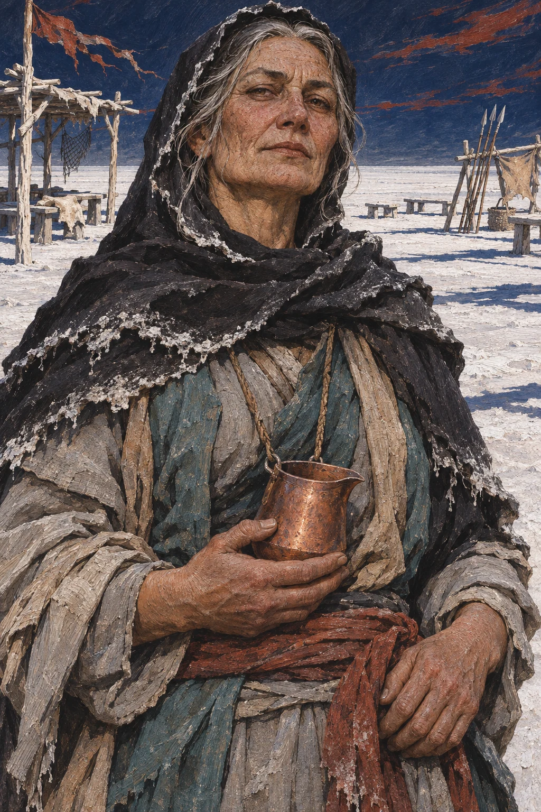
Чёрный вдовий платок с белой каймой соли, широкие ладони, медная мерка для воды на шнурке; привычка оставлять собеседнику последний глоток.
Распорядительница долей Порога Вдов: режет полукруг на карте, платит за возвращение и обещает большую премию за подтверждённую гибель Белореза.
Чтобы сорок вдовьих домов Порога пережили ещё один год.
При первой встрече. «Садитесь. Последний глоток — гостю, так у нас заведено. Я сосчитаю, сколько вас, а потом — сколько вернётся».
О седьмой доле. «Седьмая доля — честная доля. Платят за неё столько же. Только возвращаются с неё реже — так уж ей не везёт».
О пластинах. «Один полный ящик — сорок домов на год. Цены я не стыжусь. Я стыжусь, что другой у нас нет».
О муже. «Мой муж стоял на отходе девять лет назад. Не повезло доле. Я так говорю, и мне так легче».
Когда спрашивают о венце. «Да. Венец. Я знала. Каждый год называла охоту последней и каждый год покупала пластины. Хотите судить — сначала накормите сорок домов».
О будущем Порога. «Без промысла Порог умрёт. Может, и не умрёт. Я не знаю, а проверять на сорока домах страшно».
Знает, что зуб «Чёрной Сети» с венцом зверя не убивает, и каждый год покупает пластины, называя охоту последней. Седьмую, восточную долю, что держит отход, нарочно отдаёт чужим, «чтобы у нас не прибавилось вдов». Её муж погиб на черте девять лет назад; она считает это невезением доли, а не выучкой зверя.
Не знает, что зверь выучил путь отхода, где сейчас шов и что задумали капитаны. Её страх, что без промысла Порог умрёт, — её убеждение, а не предсказание.
На прямой вопрос о венце или при виде оттиска и пластин признаёт устройство без броска и объясняет, чем промысел кормит вдов. Оправданием она это не называет и снисхождения не просит.

Квадратные стеклянные очки, чёрный плащ в заплатах, на плече связка бусин ночного стекла; голос ровный, почти будничный.
Капитан «Чёрной Сети», лучший зуб на дне. Говорит, что сначала надо закончить охоту, а старые обвинения разбирать потом.
Чтобы её артель пережила этот сезон и промысел жил. Убить зверя для неё значит убить Порог — но он стал ходить и за её ладьёй.
При первой встрече. «Тише с полозьями. Он слышит дрожь за версту. Вопросы — у колодца, ответы — после сезона».
О Радане. «Верёвка была одна. Место над линькой было одно. Я выбрала. Он тоже выбрал — когда увёз нашу воду».
О промысле. «Я не обещала вам его смерть. Я обещала долю. Сорок вдовьих домов едят с моего зуба».
О звере. «В этом сезоне он ходит и за моей ладьёй. Злится. Раненые всегда злятся, а он ранен давно».
О Вереке. «Верек — хороший парень. Слишком хороший для капитана. Я всё равно сделаю его капитаном, если доживёт».
О ящике Ивы. «Ящик не мой. Но он не должен попасть к Оксинье. Пусть его выпустит кто угодно, лишь бы не продал».
С края черты, своим людям. «Не стрелять. Мы здесь только смотрим. Пусть потом никто не скажет, что это были мы».
Бьёт зубом с венцом каждый сезон и знает зачем. У Клыка Бурь не спустила верёвку людям Радана, чтобы не потерять место над упавшей линькой. После того как Радан увёз её воду и погибли её люди, она считает счёт закрытым. В этом сезоне он идёт и за ней: она хочет его смерти, но не своими руками — пусть ящик Ивы выпустит кто-то другой, лишь бы не продал его Оксинье.
Не знает, что зверь выучил отход: свои потери на отходе считает злостью раненого зверя, а то, что он идёт за её ладьёй, — его новой злостью. Не знает точного мотива Радана.
Об устройстве венца говорит прямо при осмотре стойки зуба или оттиска. Приказ о верёвке признаёт при конкретном вопросе о перилах. Признание не открывает и не закрывает никому путь дальше.

Потрёпанный белый капюшон, кривая застёжка; усмешка, когда больно или злится. У его костра лежит обломок мачты с линём на пятке.
Капитан «Сухих Зубьев». Требует, чтобы сначала вспомнили оставленных у Клыка, а потом делили добычу.
Убить Белореза своими руками и лишить Гордею славы последнего удара.
При первой встрече. «Сначала вспомните, кто остался под Клыком. Потом режьте. Я не шучу, хоть и смеюсь».
О Томиле. «Томил вязал к мачте. Мачту вырвало, его утащило. Вяжите к полозу — полоз он не вырвет».
О Гордее. «Она держала верёвку и смотрела, как они падают. Скажете, я не прав, что увёз её воду?»
Признаваясь в воде. «Да, увёз. Знал, что им не хватит. Думал — справедливо. Своих я считаю, её людей не считал. Это плохо, и я это знаю».
О звере. «Его можно убить. Томил попал — значит, можно. Остальное — удача и узлы».
Если делят риск. «Вместе. Давно мне такого не говорили. Ладно. Мои двое — с вами, а я — с ними».
В конце. «Мачту он вырвет, полоз — нет. Запомнили? Хорошо. Теперь и я наконец запомнил».
После Клыка увёз воду «Чёрной Сети», зная, что её людям может не хватить на обратный путь; несколько взрослых охотников не вернулись. Верит, что попадание его брата Томила в шов было удачей.
Не знает о венце и о том, что зверь выходит на отход. Не говорит за вдов. Хочет убить зверя искренне; станет ли помогать отряду или рискнёт один, зависит от того, что ему предложат: если отряд предлагает разделить риск, он идёт вместе со своей шлюпкой и двумя охотниками.
Рассказ о Томиле даёт, если спросить про обломок мачты, при вести о венце или если отряд резал долю вне старых надрезов. Признание про воду получают без броска, если вернуть пустой сосуд или предложить возместить трудом. Ему нужно разделение риска, а не обещание заставить Гордею извиниться.

Короткий плащ, затёртые наушники без магии и палочка, которой она отмечает край борозды.
Следопытка, ушедшая из обеих артелей. Продаёт чтение следа за воду или идёт с отрядом на равных.
Быть нанятой как равная, без капитана над собой.
При первой встрече. «Тише. Читаю след за бочку. Или иду на равных. Третьего не предлагаю».
О кольце. «Это кольцо. Он не ушёл. Обошёл и встал у них за спиной. Я видела такие после каждого удара».
О себе. «Меня нанимают вести вперёд. Назад смотреть никто не просит. А я смотрела. И молчала».
О том, как он слышит. «Он слушает не голос. Дрожь. Хотите, чтобы потерял, — замрите. Хотите, чтобы нашёл, — стучите».
У стены Острема. «Это то же кольцо. Только я рисовала плиты, а он — море. Значит, я не сошла с ума».
На черте. «Тише. Каждая гроздь — один день. Он брал тех, кто уходил дальше всех. Теперь он знает и нас».
После каждого удара видела кольца обратного следа и молчала: её нанимали вести вперёд, а не портить капитанам репутацию.
Не знает, как устроен зуб, чьи преступления в прошлом артелей, и не знает шва. Маршрут зверя называет предположением, пока нет свежей борозды.
Показывает кольцо, если её наняли или спросили, что за круг на плитах; делится наблюдениями за воду, за еду или на равных условиях (на равных — бочка каждые две ночи). Вывод игроки делают сами по видимым признакам.

Заштопанный фартук поверх дорожной одежды, вдовий платок, повязанный по-мужски; на важном слове стучит костяшкой по древку старого гарпуна. На стене доска со счётом.
Бывшая охотница, оружия не носит и принимает путников в старой поварне.
Чтобы её ящик ушёл на настоящий удар, а премия — вдовьим домам.
При первой встрече. «Садитесь. Соль — гостям, как положено. Зуб — тому, кто спросит. Я ни у кого ничего не прошу».
О Гавриле. «Он всегда уходил дальше всех. Любил первым видеть перевал. На третий сезон не дошёл».
О промысле. «Мы брали пластины. Мы называли это промыслом. А в ящик их клала я. Это мой счёт, не ваш».
О шве. «Шов открывается на дальней стороне, пока он не нырнул. Кто стоит у пасти — не увидит. Кто напротив — увидит».
О заряде. «Один ящик. Один выпуск. Попал, не попал — зуб и ящик сгорят. Я узнала это поздно, вам говорю рано».
Об условии. «Премия — вдовам. Это не плата за прощение. Прощения я не прошу и не даю. Это просто счёт».
Если зверь лёг. «Значит, лёг. Хорошо. Скажите Гаврилу… нет. Никому не говорите. Я сама скажу».
Три сезона стояла на зубе «Чёрной Сети», зная, что он не убьёт. На третьем на черте погиб её муж Гаврил (58). Ящик с пластинами — её заработок ценой чужого риска, и уход из промысла она не считает возмещением.
Не знает, где и когда зверь выйдет на этот раз, и не обещает успеха. Прощения не просит и не даёт. Про Клык Бурь знает то, что видела с зуба «Чёрной Сети» два сезона назад: обвал и пустые сосуды; про верёвку и Томила — только слухи.
Рассказывает свой опыт без броска, если спросить о муже, об уходе из промысла или о ящике; доска со счётом читается сама. Ящик отдаёт на условии: большая премия — вдовам. Не хотят условия — пусть выкупят ящик за три бочки, тогда премия и ящик их. Отказ от обоих — инструкции остаются открытыми, но полного заряда не будет.

Повязка на плече, длинный жилет и маленькая складная табуретка; сидит на верхнем уступе и не машет.
Охотник, переживший распад общей артели; ждёт на гряде воды и попутной ладьи.
Воду и путь до Пустой поварни, не примыкая ни к одному капитану.
При первой встрече. «Я был наверху. Сидел, где сижу. Воды у меня на два глотка, а слов — на один рассказ».
О верёвке. «Смотрел сверху. Верёвка была целая. Её не спустили. Кто сказал — не слышал, врать не буду».
О сосудах. «Потом сосуды с их зарубками стояли у костра Радана. Я видел. И опять ничего не сделал».
О Томиле. «Я был на уступе. Видел, как он метал со второй шлюпки, с той стороны. Свет был в шве. Потом мачта ушла под соль».
О своём имени. «Назовёте моё имя — я стану чьим-то оправданием. Не надо. Скажите: кто-то видел».
У порога поварни. «Я там был, но дальше порога не пойду. Это её дом. У Котла меня не было, про Гаврила я только слышал».
В конце. «Я там был. Теперь я здесь. Это больше, чем я сделал тогда, и меньше, чем надо».
Видел и целую верёвку, и сосуды «Чёрной Сети» у Радана и не вмешался ни разу. Боится, что любое признание сделает его чужим оправданием.
Не знает, что думали капитаны, и не знает устройства зуба. Различает увиденное, услышанное и собственную догадку.
Рассказывает без броска за глоток воды, за место на ладье или просто так, если пообещать не называть его имя без согласия.

Медные мерки на поясе, белые от соли брови и ножницы для обрезания долговых шнурков.
Хозяйка водяного склада: продаёт воду за бочку, за работу или за пластину.
Сохранить воду работникам стоянки и не дать капитанам взять её силой.
При первой встрече. «Вода не за доблесть. Сколько вас? Я считаю глотками, не головами. Это три дня».
О цене. «Пластина — три бочки на тот же вес. Работа — две. Долг — две, но я его запомню. Это до Котла».
О капитанах. «Капитаны приходят и уходят. Работники остаются. Я храню воду для тех, кто остаётся».
О пустых сосудах. «Метка моя, зарубка их. Нашлись у Радана. Это всё, что я знаю, — ни глотка больше».
О резерве. «Резерв — для ухода работников, если капитаны начнут драку. Не для охоты. Это не торг, это мера».
Если правду сказали у колодца. «Работа у сосудов — вода без пластины. Сколько унесёте. Это за правду, а не за доблесть».
Держит неприкосновенный запас для ухода работников, если артели начнут драку. Это не избыток, которого хватит на все планы.
Не знает устройства зуба и не винит отсутствующих. Резерв работников не отдаёт ради продолжения охоты.
Цены и запас называет любому, кто спросит. О резерве говорит только при конкретном плане отхода работников.

Голова набок, полотняный жилет, угольные пальцы; у двери связка старых мерных вешек с железными пятками.
Смотритель башни: отмечает углём движения больших существ по соляным грядам.
Чтобы его стену прочли, раз доску сломали.
При первой встрече. «Стена на втором ярусе. Три года, три полукруга. Читайте, пока светло: лампа у меня одна».
О стене. «Север — удар. Юг — сбор. Восток — выход через полдня. Три раза восток. Это не догадка, это уголь».
О доске. «Мне сломали мерную доску за плохую примету. Доску сломать можно. Стену — нет».
О вешках. «Две вешки. Железные пятки, линь до последнего. Держат в соли. Ставьте там, где он пойдёт».
О шве. «На сброшенных панцирях у Чёрной линьки шов виден всегда. Одно и то же место, каждый год».
В конце. «Четвёртый полукруг. Ваш путь. Я дорисую, чем он кончился, — как бы он ни кончился».
Сопоставил три охоты и выходы зверя на отход и не сказал капитанам: однажды ему сломали мерную доску за «плохую примету».
Не знает устройства венца, причин ухода моря и будущего маршрута зверя. Стена показывает повторы, но не чужие намерения.
Объясняет ключ к знакам при обычном осмотре, без броска. Вешки отдаёт, если спросить, чем размечать черту; имя в тайне держит, если просят, но это не плата.

Широкоплечий, в аккуратно подогнанной старой куртке брата; на поясе неиспользованный знак капитанской доли.
Помощник Гордеи: распределяет людей и ночлег «Чёрной Сети».
Самому решить, идти ли по дороге брата, и не предать живых молчанием.
При первой встрече. «Простите. Режьте быстрее, пока они не начали. Они всегда начинают».
О венце. «После удара свет уходит назад, в венец. Каждый раз. Я думал, так и надо. Простите».
О брате. «Брат стоял на отходе. Его платок — третий от Котла. Он говорил: стена знает больше капитанов».
О Гордее. «Она хочет сделать меня капитаном доли. Простите. Я не хочу идти по его дороге».
Предупреждая о гостях. «Простите. Они пойдут без огня, с востока. Ящик не держите у борта. Я не хочу, чтобы это было на мне».
Если он не друг. «Простите. Я только делаю, что велят. Не смотрите на меня так, я и сам себя вижу».
Принося ящик. «Простите, что поздно. Гордея спит. Я принёс, пока она не передумала. И пока я не передумал».
Видел, как свет возвращается в венец, и не понимал зачем, пока не увидел отряд. Его брат Остап (33) погиб на черте; платок Остапа третий от Котла. Гордея хочет сделать его капитаном доли, а он не соглашался.
Не знает прошлого Гордеи и не решает за артель. Что сделает зверь, не знает.
Надпись на венце видна и без него. Оттиск и пластину даёт, если пообещать не называть его Гордее. На вопрос о себе просит не назначать его вместо брата.

Белое дно бывшего моря: хрустящая корка над густым рассолом, каменные острова и старые раковины размером с дом. Ладьи ходят здесь на полозьях под парусом, а ветер почти всегда дует с запада на восток.
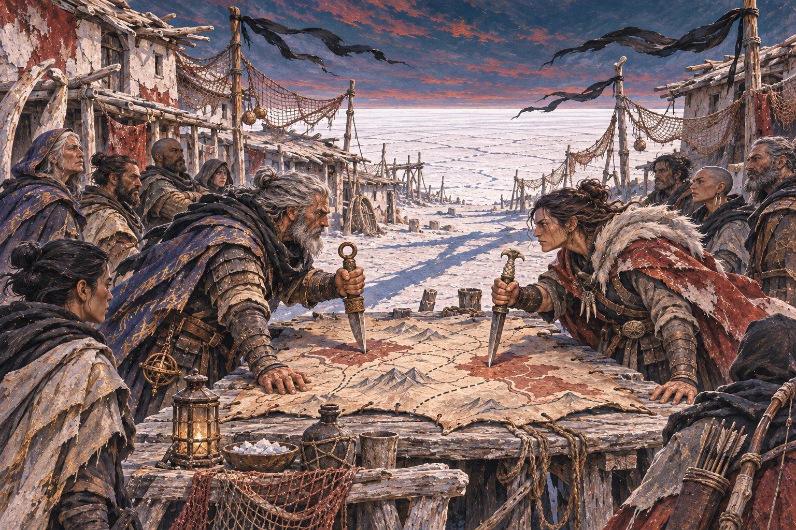
Посёлок над бывшим берегом: каменные дома, площадь со столом долей, на котором распята шкура-карта дна, и сорок вдовьих домов с чёрными платками на дверях. Воду здесь меряют медными мерками и меняют на работу и долги. По утрам отсюда виден дальний соляной горизонт, а вниз, к белому дну, уходит Утопленная лестница.
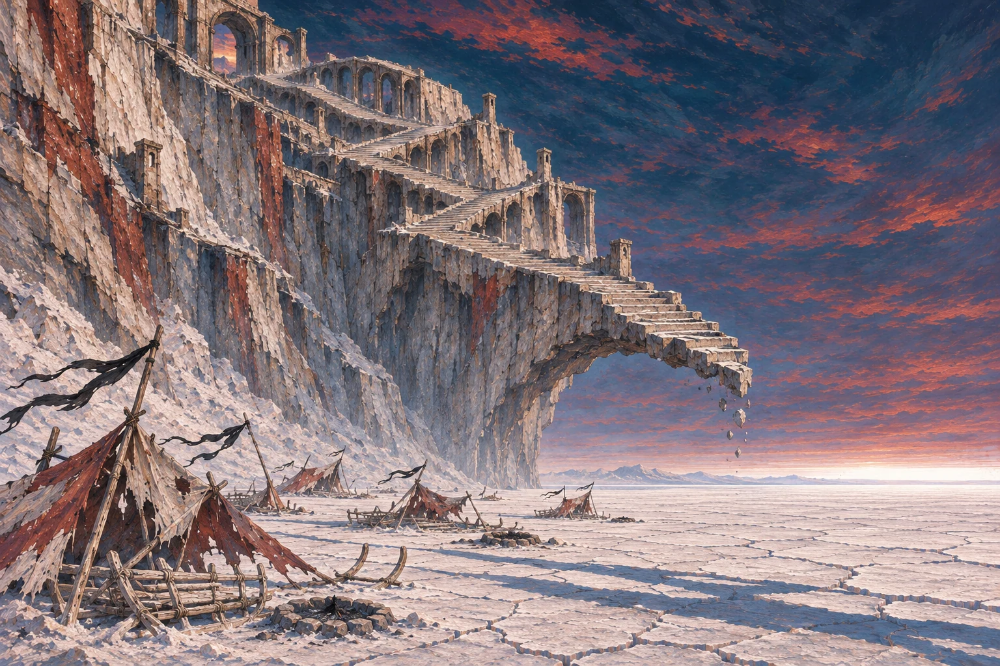
Сотни каменных ступеней спускаются с берега и обрываются над белым дном — когда-то они уходили под воду, отсюда и имя. Соль хрустит на каждом пролёте и садится на ресницы. У подножия стоят ладьи на полозьях, шлюпки спускают к ним на канатах, а чуть в стороне лежат две разорённые стоянки: рваный брезент и изломанные полозья.
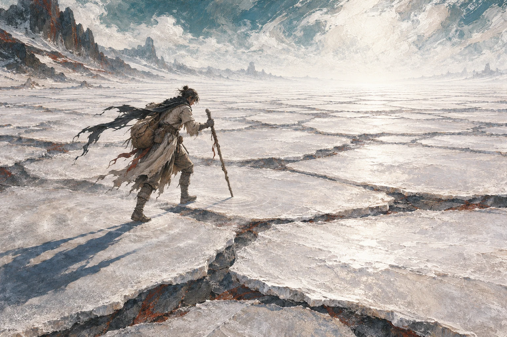
Равнина ровных соляных плит, гладких, как столы; каждая звенит под полозом и под ветром своим голосом — низким, высоким, треснувшим, и вся равнина отвечает. Между плитами выступает тёмный камень, на котором можно встать на ночь, а местами лежит лишь тонкая корка с мокрыми пятнами над рассолом. На западе виден каменный остров с воротом.
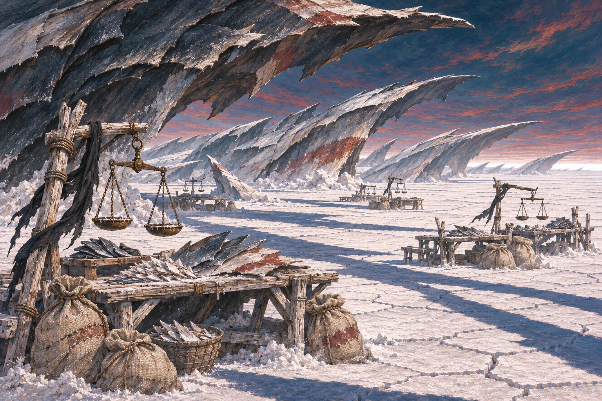
Чёрные обломки старых панцирей торчат из соли, словно крыши погребённого города: скаты, гребни, провалы, за которыми можно спрятать ладью. Ветер гонит по ним белую пыль. Здесь собирают пластины для ночного стекла, и на краю видны места сортировки, куда встают ладьи сборщиков и где после работы остаются пустые ящики и запах масла.
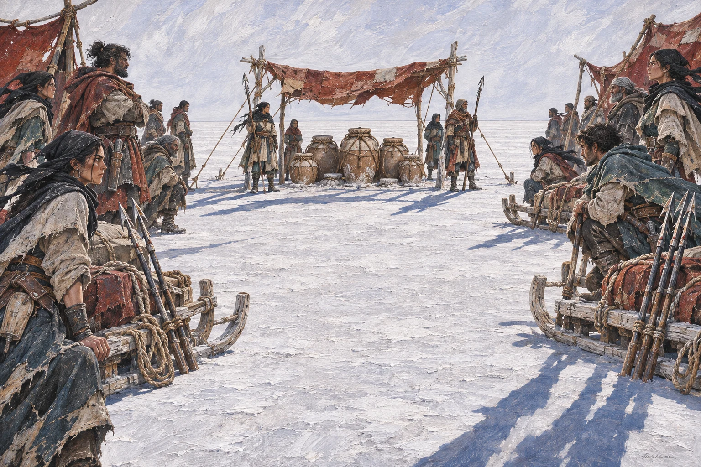
Каменная площадка посреди белого дна с колодцем и рядами закрытых глиняных сосудов воды, у каждого на горле медная метка. Пахнет мокрой глиной. Воду здесь отмеряют за бочку или за работу, и спорить с мерой не принято. По краям горят два костра двух враждующих артелей, а между ними стоят весы, на которых взвешивают пластины.

Узкая каменная гряда поднимается из соли, как обломанный зуб; камень у её подошвы глушит дрожь корки. На гряде два уступа, верхний и нижний, между ними — остатки верёвочных перил и вбитые крюки. Внизу лежит старый обвал, заросший солью. Над ним на крюках колышутся выцветшие вдовьи платки: два сезона назад здесь погибли люди.
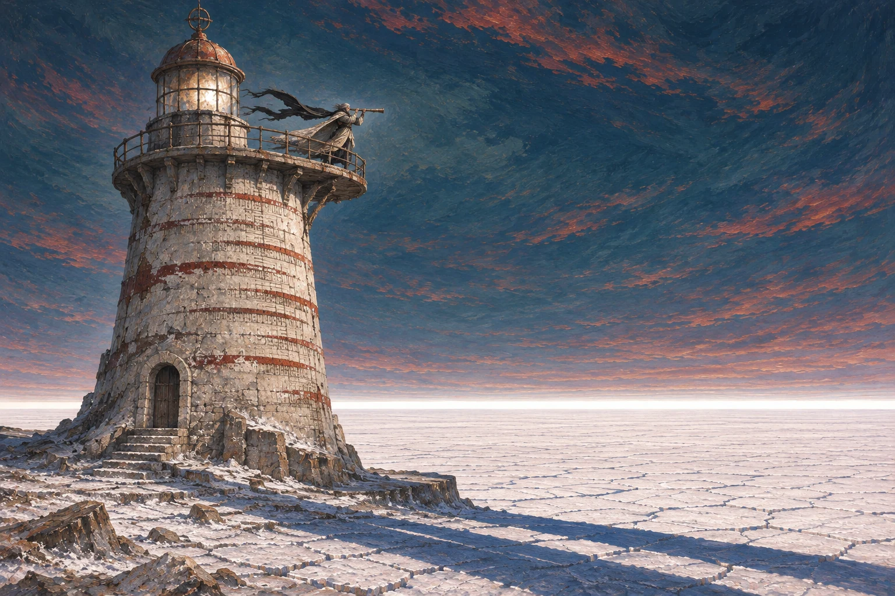
Круглая башня смотрителя бывшего берега, сложенная из серого камня. Снаружи по стенам до самой крыши идут мерные риски давно ушедшей воды — последняя, нулевая, у самого фундамента. У двери стоит связка старых мерных вешек с железными пятками. Внутренняя стена второго яруса расчерчена углём так густо, что камня почти не видно.

Низкая поварня старой артели на каменном островке посреди белого дна. Когда-то здесь кормили охотников перед выходом к Котлу; теперь артели нет, а имя осталось. Печь тёплая, из трубы дым идёт прямо вверх, стол накрыт для гостей. На двери висит вдовий платок, выбеленный до цвета кости.

Рыжие стены прорезают белый пласт, как порезы на старой коже; соль здесь окрашена ржавчиной. Узкое ущелье глушит ветер, полозья гремят по камню, а вдоль стен тянутся каменные полки, где можно поставить ладью. На выходе разрез открывается на широкое белое дно, за которым лежит Котёл.
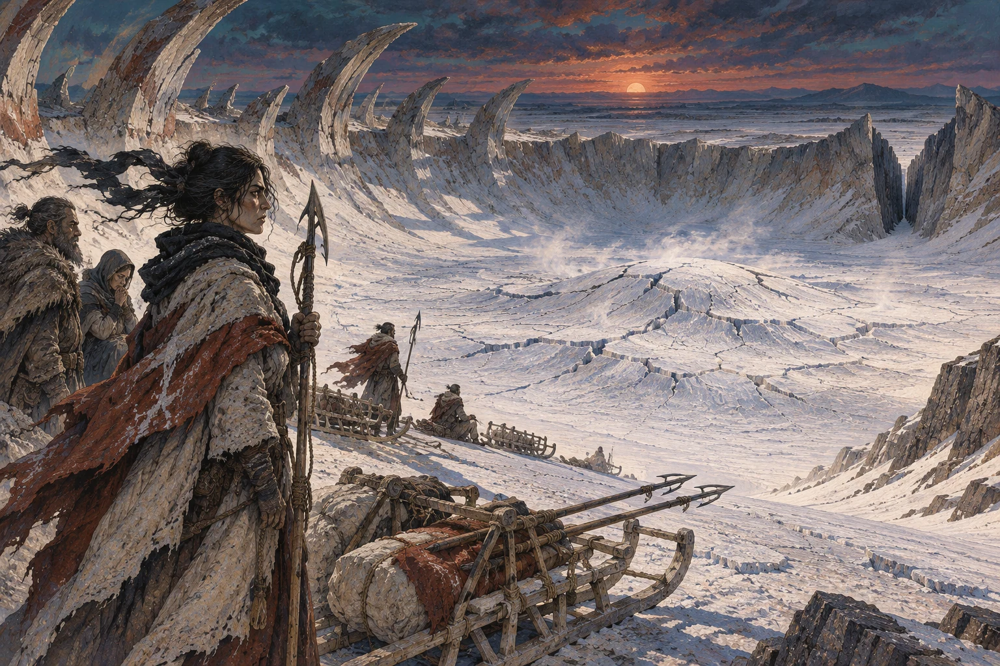
Огромная впадина между каменными рёбрами, такая широкая, что дальний край тонет в дымке. Говорят, когда море ещё было, здесь не бывало ни прилива, ни отлива. У западного ребра сохранилось старое место охотничьего станка, а от подножия ребра на восток уходит Вдовья черта. Вокруг Котла каждый сезон режут охотничий полукруг.

Проход на старый берег в восточном конце Вдовьей черты, между двумя голыми каменными плечами. Берег отсюда загибается к западу, и с перевала снова видны крыши Порога Вдов — день пути берегом. Здесь кончается белое дно и начинается твёрдая земля; кто дошёл сюда, тот, по обычаю Порога, вернулся.
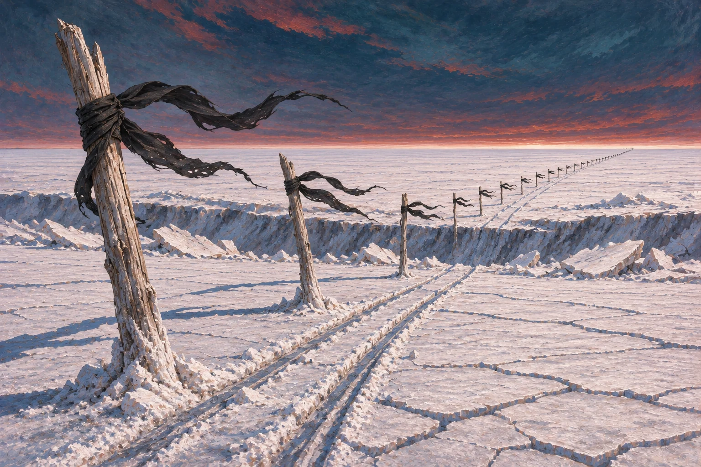
Долгая белая равнина от Котла на восток, к Сухому перевалу, ровная, как натянутое полотно. Вдоль неё стоит ряд вешек с выцветшими вдовьими платками; на узлах вышиты имена и дни. Ветер с запада тянет платки к перевалу. Местами под ногами лишь тонкая корка над рассолом, и она гудит, если по ней идти.

Вырезанный ножом кусок дублёной шкуры-карты ладони в три шириной: сектор седьмой доли у восточного края Котла Неприливов. Края подрезаны неровно, по лицевой стороне идут свежие надрезы, а на просвет под ними проступают другие, глубже и темнее. В уголке прожжена метка стола долей.
Лоскут показывает позиции старого охотничьего полукруга у Котла и начало Вдовьей черты. В вечере 8 по нему видно, где можно «встать в старый полукруг» (след +2, расстановка «Застигнуты», но первая цель зверя известна заранее — шлюпка, что стучит), а где его лучше обойти и идти к черте раньше зверя. Его можно показать Оксинье, Радану или Острему, чтобы сверить надрезы. Держатель — Дерва; если она не за столом, лоскут переходит к действующему герою ядра.

Гарпун с ясеневым древком, потемневшим от рук и соли, и узким железным зубом с двумя зазубринами. К кольцу у основания привязан линь в тридцать саженей, свёрнутый в бухту; на пятке древка затянут вдовий узел из чёрной нити.
В финальном бою им можно бить в шов с расстояния до 6 клеток вместо обычных 4. Длинный линь позволяет привязать его к полозу шлюпки (а не к мачте) и держать зверя у поверхности. Вне боя годится как обычный охотничий гарпун и как память о Любаве: Дерва сама решает, что с ним делать. Механической обязанности мстить предмет не накладывает.

Связка плоских речных камней размером с ладонь, нанизанных на кожаный шнур. На каждом выцарапана стрелка и несколько засечек; у одних углы стёрты пальцами, у других царапины ещё светлые.
Раз за вечер, после проваленного чтения следа, Тарон может сказать «не знаю» и выставить метку на борозде: вместо ошибки следопыта (+2) след ±0, а вода −1, потому что отряд ждёт и проверяет. Метку можно поставить и без провала, чтобы вести ладью в пургу или по полкам без потерь. Если Тарона нет, метками пользуется любой, кто читал след в этой сцене.

Кожаный мешочек, стянутый шнурком, с крупной серой солью: кристаллы мутные, с тёмными прожилками. Мешочек потёрт на сгибах, на нём вышита одна коротенькая строчка из имён.
Позволяет засолить кровь или свежую линьку без траты времени: снимает «+1 за кровь» на эту ночь. В финальном бою действием стабилизирует соседнего лежащего героя без броска. Соли хватает на весь поход. Применять её может любой герой, обряд не требует класса; если Сельмы нет, мешочек у действующего героя ядра.

Семь чёрных платков из плотной шерсти с белой каймой соли. По краю каждого вышито имя, у некоторых ещё и день; нитки разных лет, от почти белых до свежих. Пахнут дымом и камфарой.
Платок, поднятый вместо паруса, пускает пустую шлюпку по ветру на восток: она сама идёт, пока не упрётся в пятно корки. В финале при «Засаде» приманку из пустой шлюпки под платком ставят при расстановке, без траты действия; в бою — действием героя в шлюпке. Платок, повязанный на вешку Вдовьей черты, — дань погибшему; механики у этого нет, это решение игрока. Платок, отданный шлюпке, не возвращается.

Чёрная пластина размером с ладонь, гладкая с одной стороны и шершавая с другой, ещё тёплая на ощупь. На внешней стороне чётко виден круглый вдавленный след, словно кто-то прижал к ней монету. На изломе — тонкие слои, как у слюды.
Улика промысла: можно положить рядом с другими пластинами и сравнить пределы удара. Валюта: плата Нене за воду (+3 вместо +2 за работу) и товар для Оксиньи. В вечере 7 пластину можно бросить по ветру на дальнюю корку как приманку для резунов. Пока она на борту несолёной, каждая ночь даёт след +1 («кровь»); соль Сельмы это снимает.

Лист плотной бумаги, натёртый углём с литой надписи на съёмном венце: строки неровные, буквы стоят глубоко, края листа чёрные от пальцев. В уголке — отпечаток большого пальца.
Показывает надпись любому, кому его покажут: Радану, Нене, Оксинье, вдовам. Это документальная улика промысла, её можно предъявить при разговоре у колодца или у стола долей. Читается без броска. Оттиск не выдаёт, кто его снял, если герой пообещал Вереку молчать; нарушенное обещание остаётся решением игрока.
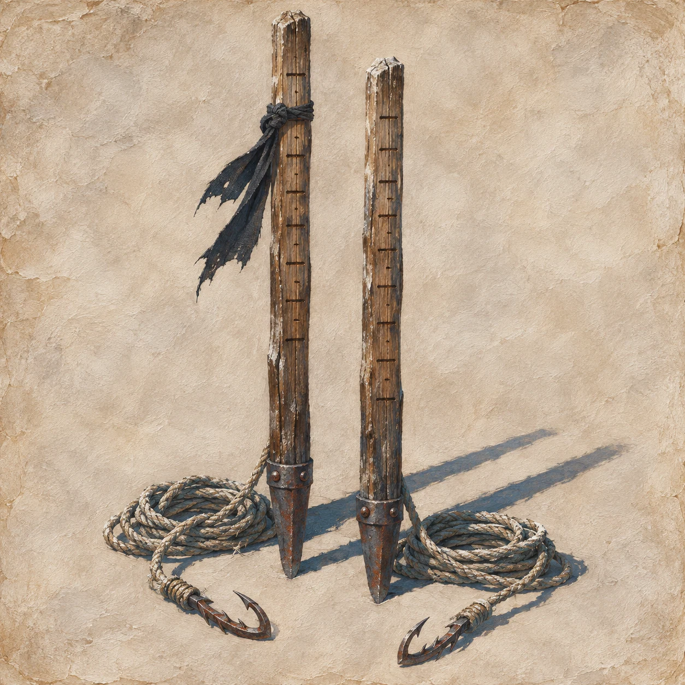
Две мерные вешки в рост человека, из тёмного дерева, с железными пятками и свёрнутыми у основания линями. На конце каждого линя — тяжёлый крюк с зазубриной. На дереве выжжены деления, а сверху привязаны выцветшие полоски ткани.
В финале при расстановке «Засада» вешки ставятся на клетки Вдовьей черты (при следе 10–11 — только одна). Если Белорез всплыл так, что его тело вплотную к вешке, её линь входит в шов сам: метка без броска. Это событие окна (одно на окно) и не срабатывает в окне, где стол объявил заряд. Каждая вешка срабатывает один раз. При «Застигнутых» вешки не ставятся. Взять их можно у Острема, если спросить, чем размечать черту.

Стяжной зуб размером с руку взрослого: сужающееся железное жало на деревянной колодке с гнездом у основания. Весь зуб обёрнут в кожух из вдовьих платков, сшитых узлами; сверху висит бирка с неразборчивой запиской. Тяжёлый, холодный на ощупь, пахнет маслом и солью.
Даёт один полный заряд в финальном бою. Заряжается ящиком Ивы в сцене 1 вечера 8: пластину за пластиной, около часа, любой герой ядра, без броска. Стреляет любой герой, из-за края напротив пасти, не дальше 3 клеток, когда в шве нужное число меток (у изнемогшего зверя — хотя бы одна); бросок атаки по классу брони шва (8 с рассказом охотницы, иначе 15). После выпуска зуб сгорает, попал заряд или нет. «Обнаружение магии» видит в нём заряд.
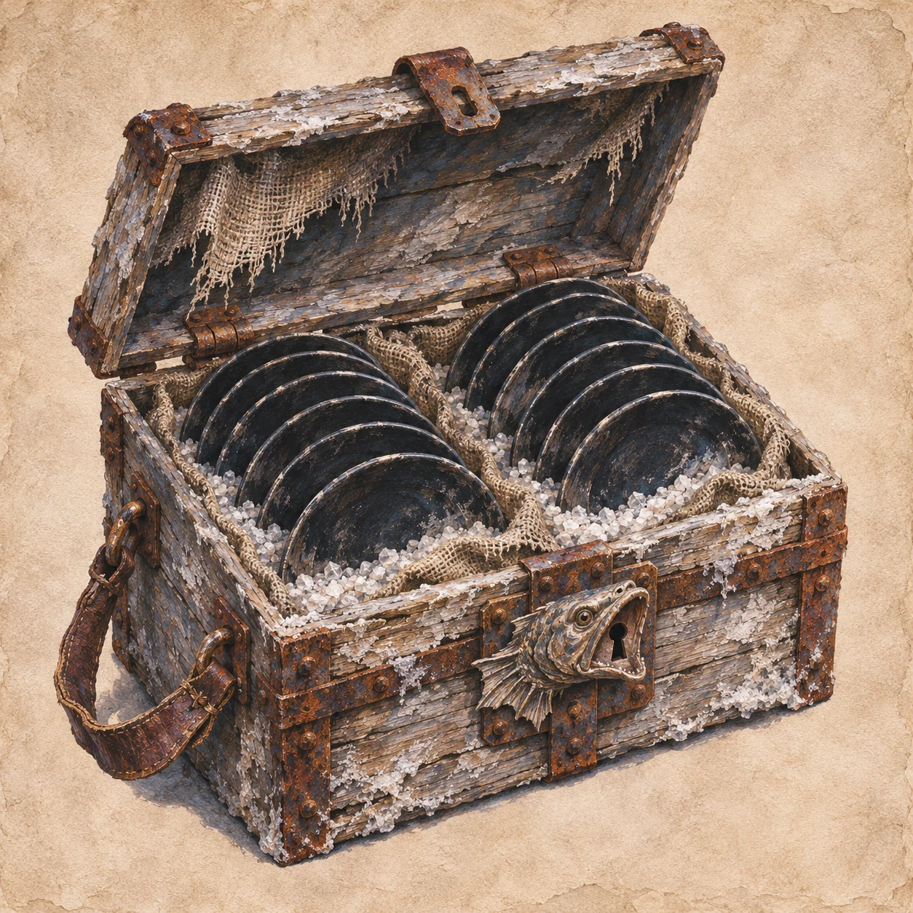
Небольшой ящик, окованный потемневшим железом, с кожаной ручкой и железным замком в форме рыбьей головы. Внутри в крупной серой соли лежат двенадцать чёрных пластин, переложенных мешковиной. Ящик тяжёл, но один человек его поднимет.
Без него полного заряда нет: ящик заряжает зуб Ивы в вечер 8. Он стоит всей большой премии, и пока заряд не выпущен, Оксинья купит его не торгуясь — в этом искушение. В вечер 6 это цель ночных гостей: двое рядом несут его вместе на половине скорости, один — на 2 клетки за ход. Гордея готова оставить его отряду за две бочки и слово, что ящик не будет продан. Ящик ставится на ладье посередине или на корме, у западного края. После выпуска заряда сгорает.

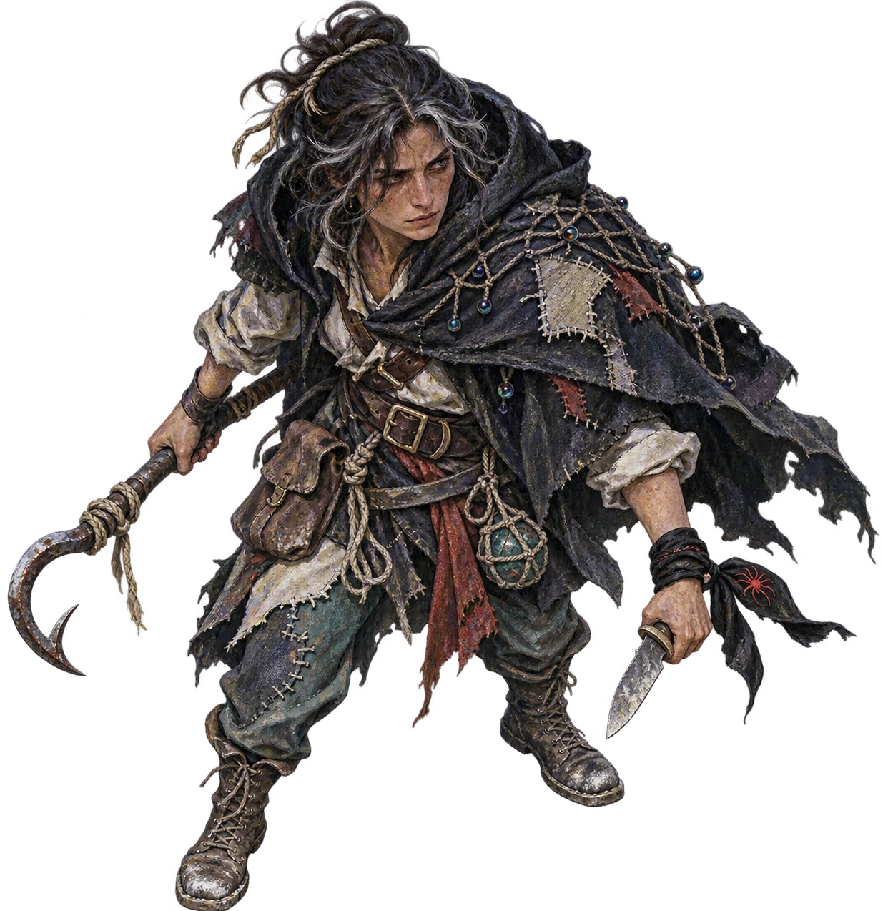
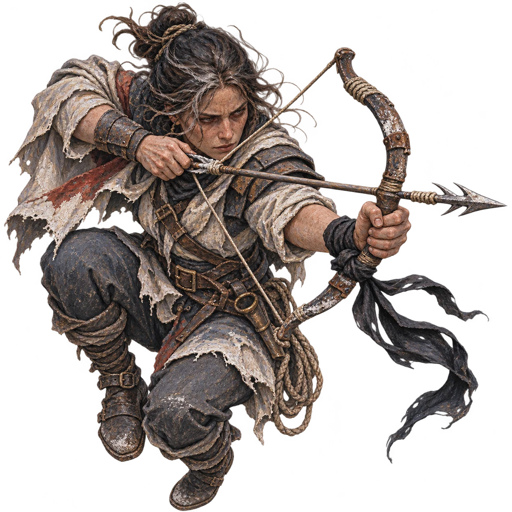

Условия: В бою на Вдовьей черте (вечер 8) полный заряд зуба Ивы попал в шов, в котором стояло нужное число меток, или в шов изнемогшего зверя, где стоит хотя бы одна метка. Исход наступает в тот раунд, когда условие выполнено.
Свет уходит в шов и не возвращается. Гребень темнеет, чёрные пластины сползают со спины, как снег с крыши, корка под ним перестаёт гудеть. Белорез ложится на черту и больше не поднимается. Выжившие к закату выходят к Сухому перевалу и видят крыши Порога. Премия за гибель зверя идёт за ящиком: вдовьим домам, как обещано Иве, или вам, если ящик выкуплен.
Цена: Зуб и ящик сгорели. Промысел кончился для всех: Порогу больше нечего продавать, у «Чёрной Сети» нет ремесла, и Оксинье придётся кормить вдовьи дома иначе. Погибшие в походе остаются погибшими, их платки — на черте. Вражда Гордеи и Радана смертью зверя не кончается.
Белорез лежит на Вдовьей черте, и корка под ним больше не гудит. К закату выжившие выходят на Сухой перевал и видят внизу крыши Порога — розовые, как рёбра Котла на рассвете. Оксинья ждёт у бочки для вернувшихся и пересчитывает имена вслух: сначала живых, потом остальных. Если премия ушла вдовьим домам, Порог проживёт год, а потом ему придётся учиться жить без промысла: чёрное стекло с Отлива больше не придёт. Ива, услышав новость, долго стучит костяшкой по древку и снимает со стены доску со счётом сезонов. Гордея уводит «Чёрную Сеть» на запад без ремесла; Верек, если он жив, остаётся в Пороге и учится чинить полозья, а не командовать долей. Радан, если дожил, вешает обломок мачты Томила над дверью и впервые за два сезона спит до утра. Вражда капитанов не кончилась — она просто осталась без зверя. Лута получает плату как равная и уходит на свои плиты, а Острем дорисовывает на стене четвёртый полукруг и ставит в его конце точку, какой там ещё не было. На черте прибавились платки — столько, сколько стоил этот день. Но новых больше не будет.
Условия: Бой кончился, Белорез жив, и хотя бы один герой стоит на поле (выше 0 хитов): изнемогший зверь нырнул без полного заряда в шов с меткой, или кончился восьмой раунд, а в шве стоит хотя бы одна метка.
Если в шве стоят метки, Белорез уходит в глубину, волоча гарпуны; если меток нет, он просто уходит в корку. Гребень режет соль на восток и пропадает. Выжившие проходят черту и к ночи выходят к Сухому перевалу. Малая плата за возвращение положена; большой премии нет.
Цена: Зверь жив и знает ваши шлюпки и ваши вешки: следующий отход по черте будет хуже прежних. Если полный заряд выпущен мимо, зуб и ящик потрачены зря. Промысел может продолжаться — с ещё более учёным зверем.
Гребень уходит на восток, волоча за собой гарпуны, и белое лезвие пропадает за краем соли. К ночи выжившие проходят черту и выходят на Сухой перевал; внизу горят окна Порога. Оксинья платит малую плату за возвращение и не спрашивает, почему нет большой. Она знает: зверь жив и помнит теперь не только отход, но и шлюпки «Седьмой доли», и вешки, которые на него ставили. Следующая охота будет хуже прежних, и следующую седьмую долю, может быть, не возьмёт никто — ни чужие, ни свои. Если полный заряд ушёл мимо, Ива выслушивает это молча и вешает на гвоздь пустой кожух из вдовьих платков. Если ящик цел, он стоит в поварне и ждёт того, кто придёт за ним в следующем сезоне. Радан, если жив, говорит, что железо в шве — уже половина дела, и ищет новую шлюпку. Гордея снова готовит зуб с венцом, зная, что следующий удар придётся по зверю, который помнит вкус гарпуна в шве. Лута рисует новое кольцо, больше прежних. Острем ставит на стене знак, которого раньше не было: шов с метками. Охота не кончилась. Она стала честнее и опаснее.
Условия: Раньше, чем выполнено условие первых двух исходов, все герои на поле лежат на нуле хитов, или последний стоящий герой ушёл с поля на восток, или кончился восьмой раунд, а в шве нет ни одной метки и зверь не изнемог.
Белорез держит черту. Ушедшие на восток выходят к Сухому перевалу ночью. Лежащие делают обычные броски от смерти; когда корка остынет, зверь уходит, и тех, кто стабилизировался, подбирают со шлюпки ладьи (Лута или Демид, если они с отрядом; иначе сами ушедшие возвращаются за ними). Умершие остаются на черте. Если за лежащими некому вернуться, стабильные приходят в себя через 1d4 часа на остывшей корке и идут к перевалу по вешкам. Если все погибли, покажите Порог. Оксинья пересчитывает имена у пустой бочки.
Цена: Зверь жив и сыт; вешки черты прибавят новые платки, и Сельма знает, чьи имена на них вышьют. Если полный заряд выпущен, зуб и ящик потрачены. Малая плата за возвращение положена только за точный рассказ о том, что случилось.
Белорез держит черту, пока корка не остынет, а потом уходит в глубину, и соль над ним смыкается, как вода. Ушедшие на восток выходят к Сухому перевалу ночью, по вешкам, и видят внизу редкие огни Порога. Тех, кого подобрали на остывшей корке, везут в шлюпках, укрыв парусиной, и никто не разговаривает. Оксинья встречает у пустой бочки и пересчитывает имена вслух — всех, кто ушёл с «Седьмой долей», и тех, кто не вернулся. Старшая вдова садится вышивать новые платки, и Сельма, если она жива, знает, чьи имена будут на них. У восточного конца черты встанет четвёртая гроздь. Ива ничего не говорит; она делает на доске сезонов новую глубокую зарубку и обводит её углём. Радан, если жив, повязывает рядом с платком Томила ещё один. Гордея узнаёт новость у колодца и долго молчит: зверь, который ходит за её ладьёй, стал сытым и учёным. Лута рисует на стене Острема ещё одно кольцо — на этот раз вокруг стоянки «Седьмой доли». А Острем дорисовывает четвёртый полукруг и ставит у восточного конца двойную линию. Счёт не закрыт. Но его теперь можно прочесть.
Авторская подготовка и техническая проверка не заменяют живую игру. Длительность, сложность и эмоциональное восприятие пока не проверены группой. Иллюстрации (44) созданы генерацией изображений OpenAI в одном стиле; тактические схемы построены из данных встреч. Полный каталог содержит материалы ведущего — публиковать его целиком для игроков нельзя.